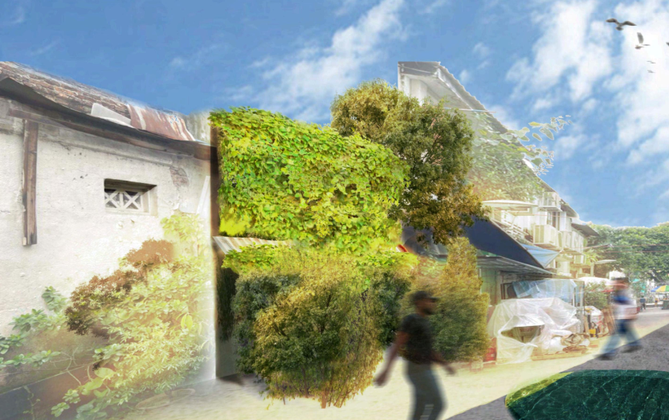
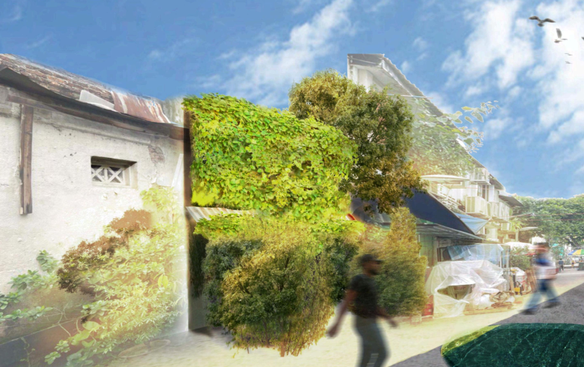

JALAN JAVA
The brief was to create an architecture design based on a traditional architecture style, and create our own Revit family components. I chose to use traditional Malay kampung architecture. I designed all the wooden railings, windows, tables, and the pendant light taking inspiration from cafes with this style.
 
